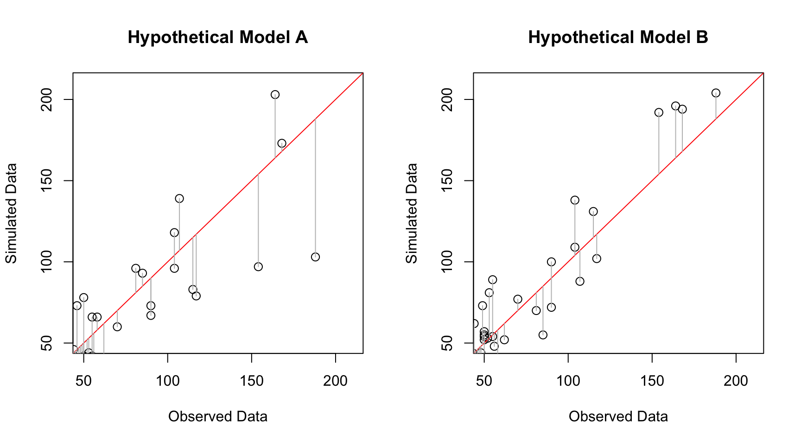
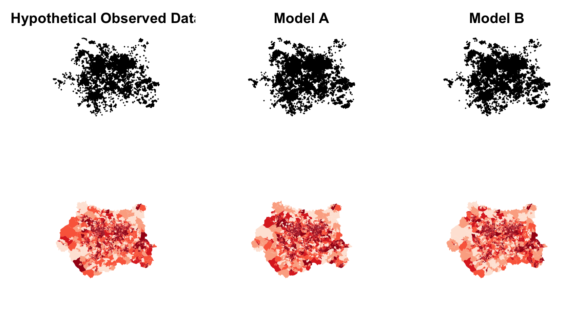

Statistics and Graphs for ABMGIS Book, Chapter 7
Nick Malleson
26 April, 2017 (06:51)
# Set the working directory to the directory that contains this script
setwd("~/research/writing/ABM_Book/Writing/Chapter7a/resources/")
# Remember the default margins (useful later when they need changing temporarily)
default.mar <- par("mar")
library(GISTools) # A great GIS package; lots of other useful dependencies loaded as well
library(rgdal) # For reading shapefiles
library(hydroGOF) # Has an rmse() function
library(pander) # For printing tables nicely
library(classInt) # Jenks natural breaks
library(spatstat) # For Ripley's K and others
library(spatialEco) # For Nearest Neighbour Indea
library(raster) # For generating raster grids
library(parallel) # For doing more than one thing at a time (quicker when you have a multi-core CPU)
library(spdep) # For GI*This document runs the examples of different statistics that can be used to calculate the error between two data sets (i.e. a model output and ‘real’ observed data).
Download Example Data - Crime in West Yorkshire
The examples here will make use of three example datasets that are similar, but not identical. These are all the crimes that occurred in West Yorkshire in May 2013, May 2014 and May 2015. They are available to download from data.police.uk.
Henceforth the data will be used as follows:
- May 2014 will be the observed (‘real’) data
- May 2013 will be the hypothetical results from a simulation run (simulated1). These will be randomised a bit so that simulated1 appears to be worse than simulated2
- May 2015 will be the hypothetical results from a different simulation run (simulated2)
Some of the examples will use statistics that require aggregate data, so the following will also read LSOA boundaries and aggreagte the crime data. These were downloaded from data.gov.uk and West Yorkshire was extracted separately.
# Because there is some randomisation in the crime data, only re-read it if this is the first time the script has run.
# Otherwise the results will be slightly different each time.
if (file.exists("./statistics.RData")) {
print("Loading data from RData file")
load("./statistics.RData")
} else {
print("Re-reading data and re-randomising")
# Read crime from May 2015
crime.15 <- read.csv("data/2015-05-west-yorkshire-street.csv")
# Remove the 'context' column and get rid of any incomplete rows
crime.15$Context <- NULL
crime.15 <- crime.15[complete.cases(crime.15),]
# Create a spatial polygons data frame
crime.15.spdf <- SpatialPointsDataFrame(coords=crime.15[,c("Longitude","Latitude")], data=crime.15, proj4string = CRS("+init=epsg:4326"))
# Transform that data to the British National Grid coordinate system and rename it 'simulated' (i.e. simulated data)
# (Note that the proj4string for BNG came from: http://spatialreference.org/ref/epsg/osgb-1936-british-national-grid/)
simulated2 <- spTransform(crime.15.spdf, CRS("+proj=tmerc +lat_0=49 +lon_0=-2 +k=0.9996012717 +x_0=400000 +y_0=-100000 +ellps=airy +datum=OSGB36 +units=m +no_defs "))
# Do the same for from May 2014 and 2013
crime.14 <- read.csv("data/2014-05-west-yorkshire-street.csv")
crime.14$Context <- NULL
crime.14 <- crime.14[complete.cases(crime.14),]
crime.14.spdf <- SpatialPointsDataFrame(coords=crime.14[,c("Longitude","Latitude")], data=crime.14, proj4string = CRS("+init=epsg:4326"))
observed <- spTransform(crime.14.spdf, CRS("+proj=tmerc +lat_0=49 +lon_0=-2 +k=0.9996012717 +x_0=400000 +y_0=-100000 +ellps=airy +datum=OSGB36 +units=m +no_defs "))
crime.13 <- read.csv("data/2013-05-west-yorkshire-street.csv")
crime.13$Context <- NULL
crime.13 <- crime.13[complete.cases(crime.13),]
crime.13.spdf <- SpatialPointsDataFrame(coords=crime.13[,c("Longitude","Latitude")], data=crime.13, proj4string = CRS("+init=epsg:4326"))
simulated1 <- spTransform(crime.13.spdf, CRS("+proj=tmerc +lat_0=49 +lon_0=-2 +k=0.9996012717 +x_0=400000 +y_0=-100000 +ellps=airy +datum=OSGB36 +units=m +no_defs "))
# Randomise the simulated1 points by upto NUDGE meters because simulated1 data should be 'worse' than simulated2.
NUDGE <- 400
simulated1@coords[,'Longitude'] <- simulated1@coords[,'Longitude'] + runif(nrow(simulated1), -1*NUDGE, NUDGE)
simulated1@coords[,'Latitude'] <- simulated1@coords[,'Latitude'] + runif(nrow(simulated1), -1*NUDGE, NUDGE)
# Read the LSOA boundaries and LAD boundaries
lsoa <- readOGR(dsn = "./data", "west_yorkshire_lsoa_2011" )
lad <- readOGR("./data/", "West_Yorkshire_lad_2011")
# The boundaries are British National Grid, but the proj4string varies slightly so use the same one as the crime data
proj4string(lsoa) <- CRS("+proj=tmerc +lat_0=49 +lon_0=-2 +k=0.9996012717 +x_0=400000 +y_0=-100000 +ellps=airy +datum=OSGB36 +units=m +no_defs")
proj4string(lad) <- CRS("+proj=tmerc +lat_0=49 +lon_0=-2 +k=0.9996012717 +x_0=400000 +y_0=-100000 +ellps=airy +datum=OSGB36 +units=m +no_defs")
# Remove any points from outside of the boundaries (as these will make the maps look funny)
observed <- gIntersection(observed, lad, byid=T)
simulated1 <- gIntersection(simulated1, lad, byid=T)
simulated2 <- gIntersection(simulated2, lad, byid=T)
# Now aggregate the points
lsoa@data$observed <- 0 # Get the new colum ready
lsoa@data$simulated1 <- 0 # Get the new colum ready
lsoa@data$simulated2 <- 0 # Get the new colum ready
lsoa@data$observed <- poly.counts(observed, lsoa)
lsoa@data$simulated1 <- poly.counts(simulated1, lsoa)
lsoa@data$simulated2 <- poly.counts(simulated2, lsoa)
save.image(file="statistics.RData")
}## [1] "Loading data from RData file"Do a graph to show the differences between the two data sets
# Some x values
x <- lsoa@data$observed
# Identical y values so that the linear model (line of best fit) is a straight line through the origin
y <- x
# Some 'modelled' data with randomness
y1 <- lsoa@data$simulated1
# Line of best fit
m <- lm( y ~ x )
# Residuals
res1 <- signif(residuals(m), 5)
pre1 <- predict(m)
# Another model with some more randomness
y2 <- lsoa@data$simulated2
res2 <- signif(residuals(m), 5)
pre2 <- predict(m)
# Plot the data and regression line
doplot <- function () {
par(mfrow=c(1,2))
# First model
plot(x,y1, main = "Hypothetical Model A", xlab="Observed Data", ylab="Simulated Data", ylim=c(50,210), xlim=c(50,210), cex=1.2)
abline(m, col="red")
# Add residuals
segments(x, y1, x, pre1, col="gray")
# Second model
plot(x,y2, main="Hypothetical Model B", xlab="Observed Data", ylab="Simulated Data", ylim=c(50,210), xlim=c(50,210), cex=1.2)
abline(m, col="red")
segments(x, y2, x, pre2, col="gray")
par(mfrow=c(1,1))
}
# Plot for the knitr'd document
doplot()
# And a pdf for the book:
pdf(file="regression_graph.pdf", width=9, height=5)
doplot()
dev.off()## quartz_off_screen
## 2And also do a map
doplot <- function() {
par(mfrow=c(2,3))
plot(observed, main = "Hypothetical Observed Data", cex.main=2.0, cex=0.2)
plot(simulated1, main = "Model A", cex.main=2.0, cex=0.2)
plot(simulated1, main = "Model B", cex.main=2.0, cex=0.2)
choropleth(lsoa, lsoa$observed, border=NA)
choropleth(lsoa, lsoa$simulated1, border=NA)
choropleth(lsoa, lsoa$simulated2, border=NA)
} # doPlot
# Plot for the knitr'd document
doplot()
# And a pgn for the book:
png(file="hypothetical_data.png", width = 1080, height = 720, units = "px")
doplot()
dev.off()## quartz_off_screen
## 2A-Spatial Statistics: RSS, R2, SRMSE
Generate some non-spatial statistics.
First, Residual Sum of Squares (RSS). This is easy, just add up the square of the differences.
rss1 <- sum( ( lsoa@data$observed - lsoa@data$simulated1 )^2 )
rss2 <- sum( ( lsoa@data$observed - lsoa@data$simulated2 )^2 )The RSS for model 1 is and for model 2 is . It appears that model 2 is slightly better.
Now do R-Squared.
# Get r.squared by creating a linear regression model (with lm()) and calculating R^2 on the model
r.squared1 <- summary(lm(observed ~ simulated1, data=lsoa@data))$r.squared
r.squared2 <- summary(lm(observed ~ simulated2, data=lsoa@data))$r.squaredThe R-squared values are and .
Now do RMSE.
rmse1 <- rmse(lsoa@data$simulated1, lsoa@data$observed)
rmse2 <- rmse(lsoa@data$simulated2, lsoa@data$observed)The R-squared values are and .
Summarise those results in a table:
pander(
data.frame(
"Model" = c("Simulation 1", "Simulation 2"),
"RSS" = c(rss1, rss2),
"R-squared" = c(r.squared1, r.squared2),
"RMSE" = c(rmse1, rmse2)
)
)| Model | RSS | R.squared | RMSE |
|---|---|---|---|
| Simulation 1 | 107929 | 0.8011 | 8.818 |
| Simulation 2 | 85758 | 0.855 | 7.86 |
Spatial Statistics
Visual Comparison
Compare points, density, and area counts.
# Standard shading across all maps
COLOURS <- brewer.pal(9,'Blues')
BREAKS <- 8
WIDTH <- 17
WIDTH.png <- 1080
HEIGHT <- 5
HEIGHT.png <- 420
TITLE_SIZE <- 3.0
# Points
plot.points <- function() {
par(mfrow=c(1,3))
plot(lad, lwd=0.5)
plot(observed, add=T, pch=1, cex=0.35)
title("Observed Data", cex.main=TITLE_SIZE)
plot(lad, lwd=0.5)
plot(simulated1, add=T, pch=1, cex=0.35)
title("Simulated 1", cex.main=TITLE_SIZE)
plot(lad, lwd=0.5)
plot(simulated2, add=T, pch=1, cex=0.35)
title("Simulated 2", cex.main=TITLE_SIZE)
par(mfrow=c(1,1))
}
plot.points() # For knitr
pdf(file="visual-points.pdf", width=WIDTH, height=HEIGHT) # For the book
plot.points()
dev.off()## quartz_off_screen
## 2# Aggregate
# Calculate shading
agg.interval <- classIntervals(lsoa@data$observed / poly.areas(lsoa), n = BREAKS, style = 'kmeans')$brks
agg.shades <- shading(agg.interval, cols=COLOURS)
# Plot aggregate
plot.aggregate <- function() {
par(mfrow=c(1,3))
choropleth(lsoa, lsoa@data$observed / poly.areas(lsoa), shading=agg.shades, lty=0)
title("Observed Data", cex.main=TITLE_SIZE)
plot(lad, add=T, lwd=0.5, col=rgb(1, 1, 1, 0.0)) # (White fill and fully transparent)
choropleth(lsoa, lsoa@data$simulated1 / poly.areas(lsoa), shading=agg.shades, lty=0)
title("Simulated1", cex.main=TITLE_SIZE)
plot(lad, add=T, lwd=0.5, col=rgb(1, 1, 1, 0.0)) # (White fill and fully transparent)
choropleth(lsoa, lsoa@data$simulated2 / poly.areas(lsoa), shading=agg.shades, lty=0)
title("Simulated 2", cex.main=TITLE_SIZE)
plot(lad, add=T, lwd=0.5, col=rgb(1, 1, 1, 0.0)) # (White fill and fully transparent)
par(mfrow=c(1,1))
}
plot.aggregate() # For knitr
#pdf(file="visual-aggregate.pdf", width=WIDTH, height=HEIGHT) # For the book
png(file="visual-aggregate.png", width = WIDTH.png, height = HEIGHT.png, units = "px")
plot.aggregate() # For knitr
dev.off()## quartz_off_screen
## 2# KDE
# Compute KDE
observed.kde <- kde.points( pts=observed, h=3000, n=100, lims=lad) # 250m bandwidth and 100x100 grid
simulated1.kde <- kde.points(pts=simulated1, h=3000, n=100, lims=lad) # 250m bandwidth and 100x100 grid
simulated2.kde <- kde.points(pts=simulated2, h=3000, n=100, lims=lad) # 250m bandwidth and 100x100 grid
# Calculate shading
kde.interval <- classIntervals(observed.kde@data$kde, n = BREAKS, style = 'kmeans')$brks
kde.shades <- shading(kde.interval, cols=COLOURS)
# Plot KDE
plot.kde <- function() {
par(mfrow=c(1,3))
# XXXX FIND OUT WHY SHADING DOESN'T WORK
masker = poly.outer(simulated1.kde,lad,extend=100)
level.plot(observed.kde)
add.masking(masker)
plot(lad, add=T, lwd=0.5, col=rgb(1, 1, 1, 0.0)) # (White fill and fully transparent)
title("Observed Data", cex.main=TITLE_SIZE)
level.plot(simulated1.kde)
add.masking(masker)
plot(lad, add=T, lwd=0.5, col=rgb(1, 1, 1, 0.0)) # (White fill and fully transparent)
title("Simulated 1", cex.main=TITLE_SIZE)
level.plot(simulated2.kde)
add.masking(masker)
plot(lad, add=T, lwd=0.5, col=rgb(1, 1, 1, 0.0)) # (White fill and fully transparent)
title("Simulated 2", cex.main=TITLE_SIZE)
par(mfrow=c(1,1))
}
plot.kde() # For knitr## Warning in RGEOSBinTopoFunc(spgeom1, spgeom2, byid, id, drop_lower_td,
## unaryUnion_if_byid_false, : spgeom1 and spgeom2 have different proj4
## strings
pdf(file="visual-kde.pdf", width=WIDTH, height=HEIGHT) # For the book
#png(file="visual-kde.png", width = WIDTH.png, height = HEIGHT.png, units = "px")
plot.kde() ## Warning in RGEOSBinTopoFunc(spgeom1, spgeom2, byid, id, drop_lower_td,
## unaryUnion_if_byid_false, : spgeom1 and spgeom2 have different proj4
## stringsdev.off()## quartz_off_screen
## 2Spatial Description - NNI and K
# NNI
observed.nni <- nni(observed, win='extent')## Warning: data contain duplicated pointssimulated1.nni <- nni(simulated1, win='extent')
simulated2.nni <- nni(simulated2, win='extent')## Warning: data contain duplicated points# K
observed.k <- Kest(unique.ppp(as.ppp(observed)), correction='border')
simulated1.k <- Kest(unique.ppp(as.ppp(simulated1)), correction='border')
simulated2.k <- Kest(unique.ppp(as.ppp(simulated2)), correction='border')
# Plot K
WIDTH <- 10
HEIGHT <- 5
plot(observed.k$border, type='l', xlab="d", ylab="K(d)", axes=F)
axis(1, labels=F)
axis(2, labels=F)
title("Ripley's K")
lines(simulated1.k$border, type='l', col='red')
lines(simulated2.k$border, type='l', col='blue')
legend("topleft", legend = c('Observed', 'Simulated 1','Simulated 2'), col=c("black","red","blue"), lty=c(1,1,1))
# Now for the book
pdf(file="k_function.pdf", width=WIDTH, height=HEIGHT)
plot(observed.k$border, type='l', xlab="d", ylab="K(d)", axes=F)
axis(1, labels=F)
axis(2, labels=F)
title("Ripley's K")
lines(simulated1.k$border, type='l', col='red')
lines(simulated2.k$border, type='l', col='blue')
legend("topleft", legend = c('Observed', 'Simulated 1','Simulated 2'), col=c("black","red","blue"), lty=c(1,1,1))
dev.off()## quartz_off_screen
## 2Nearest Neighbour Indices are:
- Observed: 0.2530316, -203.3406287, 0, 183.9911817, 46.5555884
- Simulated1: 0.5326359, -130.2044582, 0, 179.45352, 95.5833864
- Simulated2: 0.2371359, -218.5905778, 0, 175.2310725, 41.553572
LISA Statistics
These statistics are used to identify clustering at a local (neighbourhood) level
Dual KDE
For this simple implementiont of Dual KDE, we simply take the observed KDE maps away from the simulated maps. The most complicated thing about this bit is getting the shading right.
# Take one away from the other. Slightly convoluted because there is no overloaded 'minus' operator
kde.diff.1 <- simulated1.kde
kde.diff.1@data <- simulated1.kde@data - observed.kde@data
kde.diff.2 <- simulated2.kde
kde.diff.2@data <- simulated2.kde@data - observed.kde@data
# Map them.
# Calculate shading. Do this manually. Couldn't get this to work
kde.diff.interval <- c(
-0.000000002035, # Min
-0.000000001017,
-0.0000000005085,
0,
0.0000000002432,
0.0000000004864,
0.0000000009728 # Max
)
#kde.diff.interval.shades <- shading(kde.diff.interval, cols=brewer.pal(length(kde.diff.interval)+1,'RdYlBu'))
N.LEVELS <- 10
kde.diff.interval.shades <- auto.shading(
x = kde.diff.1$kde,
n=N.LEVELS,
cols=brewer.pal(n=N.LEVELS+1 , name="RdYlBu" ),
cutter = sdCuts
)
plot.kde.diff <- function() {
par(mfrow=c(1,2))
masker = poly.outer(simulated1.kde,lad,extend=100)
level.plot(kde.diff.1, shades=kde.diff.interval.shades)
add.masking(masker)
plot(lad, add=T, lwd=0.5, col=rgb(1, 1, 1, 0.0)) # (White fill and fully transparent)
title("KDE Differences (Model 1)", cex.main=TITLE_SIZE)
#choro.legend("topleft", sh=kde.diff.interval.shades, cex=0.7)
level.plot(kde.diff.2, shades=kde.diff.interval.shades)
add.masking(masker)
plot(lad, add=T, lwd=0.5, col=rgb(1, 1, 1, 0.0)) # (White fill and fully transparent)
title("KDE Differences (Model 2)", cex.main=TITLE_SIZE)
}
plot.kde.diff() # For knitr## Warning in RGEOSBinTopoFunc(spgeom1, spgeom2, byid, id, drop_lower_td,
## unaryUnion_if_byid_false, : spgeom1 and spgeom2 have different proj4
## strings
pdf(file="kde-diff.pdf", width=WIDTH, height=HEIGHT+1.5) # For the book
#png(file="kde-diff..png", width = WIDTH.png, height = HEIGHT.png, units = "px")
plot.kde.diff() ## Warning in RGEOSBinTopoFunc(spgeom1, spgeom2, byid, id, drop_lower_td,
## unaryUnion_if_byid_false, : spgeom1 and spgeom2 have different proj4
## stringsdev.off()## quartz_off_screen
## 2GI*
It is possible to coduct Getis-Ord GI* analysis in R, but in this case we have used ArcMap. All the script does here is write out the data so that it can be read by ArcGIS.
writeOGR(lsoa, dsn = "gi_star", layer = "lsoa", driver = "ESRI Shapefile", overwrite_layer = TRUE)Multi-Scale Error Analysis
This is the R implementation of the Multiscale Spatial Error Assessment method (aka Multiscale Validation).
It is based on the R code that is being developed as part of the spatialtest project. For the most up to date version, see: https://github.com/nickmalleson/spatialtest/blob/master/r/expanding_cell.Rmd
The aim of the method is to take two point-patterns, iteratively aggregate the points to cells of increasing size, and calculate the error between the two data sets at the different grid resoultions. See the right images for an example (from here).
Thanks to Lex Comber and Chris Brunsdon for their excellent book ‘R for Spatial Analysis and Mapping’. I got most of the R GIS stuff from there.
Brunsdon, C and Comber, L (2015) An Introduction to R for Spatial Anaysis and Mapping. Sage
Define the Error Assessment Method
The following funtion defines the method. See XX for the original code, comments, and documentation. This is a very cut-down version of the function.
msea <- function(points1, points2, N=20, the.box=NULL) {
if ( proj4string(points1) != proj4string(points2) ) {
warning("The points1 and points2 projections are different, this will probably lead to catastrophic results!")
}
# A bounding box around all points
bb <- if (is.null(the.box)) bbox(points1 + points1) else the.box
results <- list()
cell.areas <- c() # The area of the cells
num.cells <- c() # The number of cells in each iteration
# Create the grids - adapted from Brunsdon & Comber (2015, p150)
for (i in seq(1,N)) {
cell.width <- (bb[1,2] - bb[1,1]) / i
cell.height <- (bb[2,2] - bb[2,1]) / i
for (shift in 1:3) { # Shift the grid. 1=no shift, 2=shift vertically, 3=shift horizontally
cell.areas <- c(cell.areas, (cell.width * cell.height) ) # Also remember the cell area for later
# Variables that change depending on the shift
offset <- -1 # The centre of the lower-left cell
dimensions <- c(-1,-1) # The number of cells (horizontal, vertical)
if (shift==1) { # This is the grid with no shifting (i.e. it fits perfectly over the study area)
centre.x <- bb[1,1] + ( cell.width / 2 )
centre.y <- bb[2,1] + ( cell.height / 2 )
offset <- c(centre.x, centre.y) # No offset, the grid will just cover all the points
dimensions = c(i,i) # Number of cells. As no shifting, don't need to add an extra row or column
} else if (shift ==2 ) { # Shift vertically.
centre.x <- bb[1,1] + ( cell.width / 2 ) # (same as with no shifting)
centre.y <- bb[2,1] #+ ( cell.height / 2 ) # (move grid down by exactly one half the height of a cell)
offset <- c(centre.x, centre.y) # Now the grid will start slightly south of the points bounding box
dimensions = c(i,i+1) # Number of cells. One extra cell in vertical dimension.
} else if (shift == 3) { # Shift horizontally
centre.x <- bb[1,1] #+ ( cell.width / 2 ) # (move grid left by exactly one half the heightwidth of a cell)
centre.y <- bb[2,1] + ( cell.height / 2 ) # (same as with no shifting)
offset <- c(centre.x, centre.y) # Now the grid will start slightly west of the points bounding box
dimensions = c(i+1,i) # Number of cells. One extra cell in horizontal dimension.
} else {
stop(paste("Internal error in grid shifting - should not have shift:",shift))
}
grd <- GridTopology(
cellcentre.offset = offset,
cellsize = c(cell.width, cell.height),
cells.dim = dimensions
)
number.of.cells <- dimensions[1] * dimensions[2] # (will change with grid shifting)
num.cells <- c(num.cells, number.of.cells) # Remember the number of cells in this iteration
spdf <- SpatialPolygonsDataFrame(
as.SpatialPolygons.GridTopology(grd),
data = data.frame(c(1:number.of.cells)),
match.ID = FALSE
)
proj4string(spdf) <- proj4string(points1)
names(spdf) <- "CellID" # Name the column
spdf@data$points1 <- poly.counts(points1, spdf)
spdf@data$points2 <- poly.counts(points2, spdf)
spdf@data$p1.pct <- 100 * spdf@data$points1 / sum(spdf@data$points1 )
spdf@data$p2.pct <- 100 * spdf@data$points2 / sum(spdf@data$points2 )
spdf@data$diff <- spdf@data$points1 - spdf@data$points2
spdf@data$abs.diff <- abs(spdf@data$points1 - spdf@data$points2)
spdf@data$abs.pct.diff <- abs(spdf@data$p1.pct - spdf@data$p2.pct)
# Store the results, remembering that each iteration will make 3 different results grids due to shifting
# (thanks AE for working out this formula!)
results[[ shift + (3*(i-1)) ]] <- spdf
} # for shifting grids
} # for cell sizes
# Now calculte the errors
rss <- c() # Residual sum of squares
r.squared <- c()
rmse <- c()
for (i in 1:length(results)) {
the.result <- results[[i]]@data # Convenience for referring to the current result we're looking at
rss <- c(rss, sum( ( the.result$points1 - the.result$points2 )**2 ))
r.squared <- c(r.squared, summary(lm(the.result$points1 ~ the.result$points2, data=the.result))$r.squared )
rmse <- c(rmse, rmse(the.result$points1, the.result$points2) )
}
# Return the results
r <- list(
"results" = results,
"cell.areas" =cell.areas,
"num.cells" = num.cells,
"rss" = rss,
"r.squared" = r.squared,
"rmse" = rmse
)
return(r)
} # functionNow run the function
N <- 20
box <- bbox(observed+simulated1+simulated2) # Calculate once now to save re-calculating again later
r1 <- msea(observed, simulated1, N, the.box = box)
r2 <- msea(observed, simulated2, N, the.box = box)
# Do the above in parallel ? (I'm not sure that the arguments will be passed)
#library(parallel)
#no_cores <- detectCores() - 1 # Calculate the number of cores
#cl <- makeCluster(no_cores) # Initiate cluster
#msea.results <- parLapply(
# cl,
# list(c(observed, simulated1),c(observed,simulated2)),
# msea(a,b)
# )
#r1 <- msea.results[[1]]
#r2 <- msea.results[[2]]Map the results
(Sanity) check that the shifting has worked for the first five grids
par(mfrow=c(5,3))
par(mar=c(rep(0.1,4)))
for (i in 1:15) {
choropleth(r1$results[[i]],
r1$results[[i]]@data$abs.pct.diff,
xlim=c(380000,460000), ylim=c(400000,500000)
)
points(observed)
}
par(mar=default.mar)For a sanity check: map the total number of points for some different grids
par(mfrow=c(4,4))
for (i in 4:1) {
index <- round(length(r1$results) / i )
choropleth(r1$results[[index]], r1$results[[index]]@data$points1, main=paste("Observed (model one)",i))
}
for (i in 4:1) {
index <- round(length(r2$results) / i )
choropleth(r2$results[[index]], r2$results[[index]]@data$points1, main=paste("Observed (model two)",i))
}
for (i in 4:1) {
index <- round(length(r1$results) / i )
choropleth(r1$results[[index]], r1$results[[index]]@data$points2, main=paste("Simulated1 (model one)",i))
}
for (i in 4:1) {
index <- round(length(r1$results) / i )
choropleth(r2$results[[index]], r2$results[[index]]@data$points2, main=paste("Simulated2 (model two)",i))
}
Now map the difference in the proportions
par(mfrow=c(2,4))
for (i in 4:1) {
index <- round(length(r1$results) / i )
choropleth(r1$results[[index]], r1$results[[index]]@data$abs.pct.diff, main=paste("Abs % Diff (Model 1)",i))
}
for (i in 4:1) {
index <- round(length(r2$results) / i )
choropleth(r2$results[[index]], r2$results[[index]]@data$abs.pct.diff, main=paste("Abs % Diff (Model 2)",i))
}
Finally make a fuzzy grid of all results
map.fuzzy <- function() { # A function so that it can be run once for knitr, and again for the book
par(mfrow=c(1,2))
statistic <- "abs.prop.diff" # The statistic to map
count <- 1 # Just for the graph labels
num.results <- length(r1$results) # The total number of results grids (3 for each resolution, i.r. 3*N)
# Shading. I know that model 1 has the greatest difference, so use that one for shading.
# Pick the result of the smallest grid as this will probably have the greatest difference
# (TODO: work out which model has greatest difference)
shades <- shading(
classIntervals(r1$results[[length(r1$results)]]@data$abs.pct.diff, n = 8, style = 'equal')$brks,
cols=add.alpha(brewer.pal(9,'PuBu'), (1/num.results) )
)
for (r in list(r1,r2)) {
last.result <- r$results[[length(r$results)]] # Convenience for list result generated (the smallest grid)
# Draw the smallest grid
choropleth(
last.result, last.result@data$abs.pct.diff,
shading = shades,
main=paste("Fuzzy Absoulte difference in \n proportions (Model ",count,")", sep=""),
lty=0,
cex.main=2.0
)
# Now do the remainder of them
for ( index in 1:(num.results-1)) {
choropleth( r$results[[index]], r$results[[index]]@data$abs.pct.diff,
shading = shades,
lty=0,
add=TRUE)
}
# Add the area boundaries with transparent fill
plot(lad, lwd=0.5, col=rgb(1, 1, 1, 0.0), add=T)
# Finally the legend
#choro.legend("topleft", sh=shades, cex=0.7)
count <- count + 1
}
}
# Make the figures
map.fuzzy() # For knitr
png(filename = "map-fuzzy.png", width=1080, height=500) # For the book
map.fuzzy()
dev.off()## quartz_off_screen
## 2Calculate and graph the errors
Calculate the following errors:
- Residual Sum of Squares (RSS) (This is easy, just add up the square of the differences)
- R-Squared
- Root Mean Square Error (RMSE)
And then graph them using two difference x axes:
- The number of cells used
- The square area of an individual cell (smallest cells first)
# Go through all of the results and calculate errors
par(mfrow=c(4,3))
count <- 1
for (r in list(r1,r2)) {
title <- paste("(M",count,")",sep="")
plot(x=r$num.cells, y=r$rss, type='p', main=paste("RSS",title), xlab="Number of cells")
plot(x=r$num.cells, y=r$r.squared, type='p', main=paste("R-Squared",title), xlab="Number of cells")
plot(x=r$num.cells, y=r$rmse, type='p', main=paste("RMSE",title), xlab="Number of cells")
plot(x=rev(r$cell.areas), y=r$rss, type='p', main=paste("RSS",title), xlab="Square area of a cell")
plot(x=rev(r$cell.areas), y=r$r.squared, type='p', main=paste("R-Squared",title), xlab="Square area of a cell")
plot(x=rev(r$cell.areas), y=r$rmse, type='p', main=paste("RMSE",title), xlab="Square area of a cell")
count <- count + 1
}
Finally graph the errors just for Model 2 (the better model).
r <- r2
title <- "(Model 2)"
xlim <- c(5,30)
xlab <- "Square area of a cell"
ylab <- "Error"
options("scipen"=100, "digits"=4) # Encourage standard (rather than scientific) notation
for (i in 1:2) { # Do once for knitr, once for the book
if (i==2) pdf(file = "graph_multiscale_error-final.pdf", width=9, height=5 ) # For the book
par(mfrow=c(1,2))
plot(x=rev(r$cell.areas/1000000), y=r$rss, type='p', main=paste("RSS",title), xlab=xlab, xlim=xlim, ylab=ylab)
#plot(x=rev(r$cell.areas/1000000), y=r$r.squared, type='p', main=paste("R-Squared",title), xlab=xlab, xlim=xlim, ylab=ylab)
plot(x=rev(r$cell.areas/1000000), y=r$rmse, type='p', main=paste("RMSE",title), xlab=xlab, xlim=xlim, ylab=ylab )
if (i==2) dev.off()
}